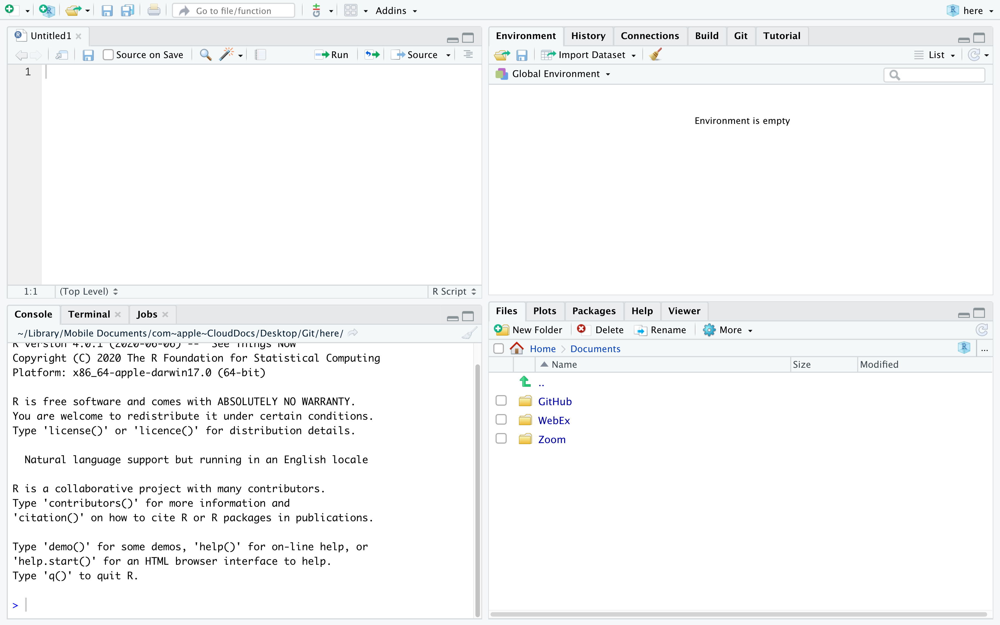

Chapter 1 Introduction to R
In this chapter we introduce R and RStudio, which you’ll be using throughout this course to learn how to analyze real data and come to informed conclusions. To straighten out which is which: R is the name of the programming language itself, and RStudio is a convenient interface for using R.
As the course progresses, you are encouraged to explore beyond what we discuss; a willingness to experiment will make you a much better scientist and researcher. Before we get to that stage, however, you need to build some competence in R. We begin with some of the fundamental building blocks of R and Rstudio: the interface, data types, variables, importing data, and plotting data.
R is widely used by the scientific community as a no-cost alternative to expensive commercial software packages like SPSS and MATLAB. It is both a statistical software analysis system and a programming environment for developing scientific applications. Scientists routinely make available for free R programs they have developed that might be of use to others. Hundreds of packages can be downloaded for all types of scientific computing applications. This chapter was written by the help of Dr. Robert Desharnais (2020).
1.1 Download and Install R and Rstudio
To get started, you need to download both the R and Rstudio software. Both are available for free and there are versions for Linux, Mac OS X, and Windows. It is suggested that you download R first and then Rstudio. R can be used without RStudio, but RStudio provides a convenient user interface and programming environment for R.
The details for downloading and installing these software packages varies depending on your computer and operating system. You may need permission to install the software on your computer. The links below provide access to a mirror archive at UCLA for downloading R and the developer’s site for downloading RStudio.
To download R, go to the url https://ftp.osuosl.org/pub/cran. Choose the binary distribution appropriate for your computer.
- Windows users will want to click on the link to “Download R for Windows” and choose “install R for the first time,” then “Download R 3.5.2 for Windows.”
- Mac OS users will want to click “Download R for (Mac) OS X.” Download the install package for version R-3.5.2 If you are using Mac OS X 10.9-10.10, install version R-3.3.3. If you are using OS X 10.6-10.8, install version R-3.2.1.
- Linux users will want to click on the link to “Download R for Linux.” You will need to choose the version of Linux that corresponds to your installation. Versions are available for Debian, RedHat, SUSE, and Ubuntu.
For RStudio, use the url https://www.rstudio.com/products/rstudio/download/. Choose the binary distribution appropriate for your computer. Installers are provided for a variety of platforms.
For additional help please see this video: Getting Started 1 | How to Download and Install RStudio
1.2 The RStudio Interface
We will begin by looking at the RStudio software interface. The RStudio program is referred to the window, and each section in the interface is a pane.

Launch RStudio. You will see a window that looks like the figure above. The four panes of the window are described as follows:
The pane in the bottom left is the R Command Console, this is where you type R commands for immediate execution.
The pane in the upper left portion of the window is an area for editing R source code for scripts and functions and for viewing R data frame objects. New tabs will be added as new R code files and data objects are opened.
The pane in the upper right portion of the window is an area for browsing the variables in the R workspace environment and the R command line history.
The pane in the lower right portion of the window has several tabs. The Files tab is an area for browsing the files in the current working directory. The Plot tab is for viewing graphics produced using R commands. The Packages tab lists the R packages available. Other packages can be loaded. The Help tab provides access to the R documentation. The Viewer tab is for viewing local web content in the temporary session directory (not files on the web).
Bottom Left Pane
Let’s begin with the Console. This is where you type R commands for immediate execution. Click in the Command Console, “>” symbol is the system prompt. You should see a blinking cursor that tells you the console is the current focus of keyboard input. Type:
## [1] 3The result tells you that the line begins with the first (and only) element of the result which is the number 3. You can also execute R’s built-in functions (or functions you add). Type the following command.
## [1] 23.14069In R, “pi” is a special constant to represent the number and “exp” is the exponential function. The result tells you that the first (and only) element of the result is the number \(e^{\pi}=\) 23.14069.
Bottom Right Pane
Now let’s look at the Files tab of the notebook at the lower right of the window. Every R session has a working directory where R looks for and saves files. It is a good practice to create a different directory for every project and make that directory the working directory. For example, let’s make a new directory called MyDirectory. (You can chose another name if you wish).
Click on the Files tab of the notebook. You should see a listing of files in your default working directory.
Click on the small button with an ellipsis image on the right side of the file path above the directory listing.
Navigate to the folder where you want to create the new directory and click the OK button.
Click on the New Folder button just below the Files tab (see right).
Type MyDirectory in the panel that opens click on the folder in the Notebook.
Click the More button to the right of the New Folder button and select the menu option Set as Working Directory. This new folder is now the working directory for the current R session. This menu option is a short cut for a command that was automatically entered into the R console.
Top Right Pane
Next we will look at the R environment, also called the R workspace. This is where you can see the names and other information on the variables that were created during your R session and are available for use in other commands.
In the R console type:
Look at the Environment pane. The variables a, b, and c are now part of your R work space. You can reuse those variables as part of other commands.
In the R console type:
## [1] 29.325000 3.378440 8.680041The variable v is a vector created using the concatenate function c(). (The concatenate should not be confused with the variable c that was created earlier. Functions are always followed by parentheses that contain the function arguments). This function combines its arguments into a vector or list. Look at the Environment panel. The text num [1:3] tells us that the variable v is a vector with elements v[1], v[2], and v[3].
Top Left Pane
Now let’s look at the R viewer notebook. This panel can be used to data which are data frame objects or matrix objects in R.
We will begin by taking advantage of a data frame object that was built into R for demonstration purposes. We will copy it into a data frame object. In the R console, type:
Let’s view the data. On the right side of the entry for the df object is a button we can use to view the entries of the data frame. Click on the View Button.
If your look in the notebook area in the upper left portion of the window, you can see a spreadsheet-like view of the data. This is for viewing only; you cannot edit the data. Use the scroll bars to view the data entries.
You can also list the data in the console by typing the name of the data fame object:
## mpg cyl disp hp drat wt qsec vs am gear carb
## Mazda RX4 21.0 6 160.0 110 3.90 2.620 16.46 0 1 4 4
## Mazda RX4 Wag 21.0 6 160.0 110 3.90 2.875 17.02 0 1 4 4
## Datsun 710 22.8 4 108.0 93 3.85 2.320 18.61 1 1 4 1
## Hornet 4 Drive 21.4 6 258.0 110 3.08 3.215 19.44 1 0 3 1
## Hornet Sportabout 18.7 8 360.0 175 3.15 3.440 17.02 0 0 3 2
## Valiant 18.1 6 225.0 105 2.76 3.460 20.22 1 0 3 1
## Duster 360 14.3 8 360.0 245 3.21 3.570 15.84 0 0 3 4
## Merc 240D 24.4 4 146.7 62 3.69 3.190 20.00 1 0 4 2
## Merc 230 22.8 4 140.8 95 3.92 3.150 22.90 1 0 4 2
## Merc 280 19.2 6 167.6 123 3.92 3.440 18.30 1 0 4 4
## Merc 280C 17.8 6 167.6 123 3.92 3.440 18.90 1 0 4 4
## Merc 450SE 16.4 8 275.8 180 3.07 4.070 17.40 0 0 3 3
## Merc 450SL 17.3 8 275.8 180 3.07 3.730 17.60 0 0 3 3
## Merc 450SLC 15.2 8 275.8 180 3.07 3.780 18.00 0 0 3 3
## Cadillac Fleetwood 10.4 8 472.0 205 2.93 5.250 17.98 0 0 3 4
## Lincoln Continental 10.4 8 460.0 215 3.00 5.424 17.82 0 0 3 4
## Chrysler Imperial 14.7 8 440.0 230 3.23 5.345 17.42 0 0 3 4
## Fiat 128 32.4 4 78.7 66 4.08 2.200 19.47 1 1 4 1
## Honda Civic 30.4 4 75.7 52 4.93 1.615 18.52 1 1 4 2
## Toyota Corolla 33.9 4 71.1 65 4.22 1.835 19.90 1 1 4 1
## Toyota Corona 21.5 4 120.1 97 3.70 2.465 20.01 1 0 3 1
## Dodge Challenger 15.5 8 318.0 150 2.76 3.520 16.87 0 0 3 2
## AMC Javelin 15.2 8 304.0 150 3.15 3.435 17.30 0 0 3 2
## Camaro Z28 13.3 8 350.0 245 3.73 3.840 15.41 0 0 3 4
## Pontiac Firebird 19.2 8 400.0 175 3.08 3.845 17.05 0 0 3 2
## Fiat X1-9 27.3 4 79.0 66 4.08 1.935 18.90 1 1 4 1
## Porsche 914-2 26.0 4 120.3 91 4.43 2.140 16.70 0 1 5 2
## Lotus Europa 30.4 4 95.1 113 3.77 1.513 16.90 1 1 5 2
## Ford Pantera L 15.8 8 351.0 264 4.22 3.170 14.50 0 1 5 4
## Ferrari Dino 19.7 6 145.0 175 3.62 2.770 15.50 0 1 5 6
## Maserati Bora 15.0 8 301.0 335 3.54 3.570 14.60 0 1 5 8
## Volvo 142E 21.4 4 121.0 109 4.11 2.780 18.60 1 1 4 2The columns are labeled with the names of the variables and the rows are labeled with the names of each car. Each row represents the data values for one car; that is, each row is one observation.
1.4 Operators
An operator is a symbol that tells the compiler to preform a specific task. There are several types of operators, some preform mathematical tasks, logical checks, and create new objects. We will review a few of the basic operators here. We will continue to discuss and introduce operators throughout this document.
Arithmetic Operators
R was designed for statistical applications and as a necessity it needs to preform mathematical operations efficiently and effectively. The first operators we discuss are a few of the basic arithmetic operations. These are operations similar to that of a calculator.
## [1] 5## [1] -1## [1] 6## [1] 0.6666667## [1] 8Relational Operators
Relational operators are used to compare two values. When using a relational operation R will return either TRUE or FALSE.
## [1] TRUE## [1] FALSE## [1] TRUE## [1] FALSE## [1] TRUE## [1] FALSEWe can use all the same operators above if our object contains more than one element. This will preform the above comparisons element by element.
## [1] 29.325000 3.378440 8.680041## [1] TRUE FALSE FALSEIf we have two vectors of an unequal length then the checks will be preformed element-by-element but the values in the shorter vector will be recycled, or repeated.
## Warning in v > w: longer object length is not a multiple of shorter object
## length## [1] TRUE TRUE FALSER evaluated the first and third element of v and compared it to the first element of w, and the second element of v to the second element of w. In this case, R returned a warning alerting you that it recycled elements. However, R will not always give a warning.
Logical operators
Logical operators are similar to relational operators. They are used to check “AND” and “OR” events. We have the & symbol which returns TRUE only if BOTH conditions are true. We also have the | symbol which returns TRUE if EITHER condition is true.
## [1] FALSE## [1] TRUEWe can also negate a TRUE or FALSE value using the ! symbol.
## [1] FALSELike relational operators from before, if we have more than one element the logical operations will be implemented element-by-element.
## [1] TRUE FALSE FALSE## [1] TRUE TRUE TRUEWe also have the symbols && and || which will ensure that only the first element in an object will be compared.
## [1] TRUE## [1] TRUEAssignment Operators
Assignment operators are used to assign values to a new object. There are many types of assignment operators, and they operate slightly differently. The two most common assignment operators are = and <-. With these operators the value to the left of the operator is the name of the new object and the value on the right is what the object is now equal to.
## [1] 5## [1] 5The majority of the time we can use these two assignment operators above interchangeably, there are some exceptions though. There are several other assignment operators which are uncommon and should only be used by advanced users, ->, <<-, and ->>.
When we create new objects it is called binding. Consider the code below.
In this line of code the object c(6, 2 ,5) is binded to the name v. That is, v acts as a reference (or a placeholder) for the object c(6, 2, 5). Everywhere we see the object v we should mentally replace it with this vector.
1.5 Naming Conventions
R has rules when it comes to naming objects. An object may start with a letter or a ., and the remaining characters may consist of letters, digits, . or _. There are also special types of objects that have already established names in R. For example, NULL, TRUE, FALSE, if, and function should not be used as a new object name. To see a list of these reserved object names type ?Reserved in to your console.
References
Dr. Robert Desharnais. 2020. Biology3000. Los Angeles, CA: California State University, Los Angeles.
1.3 Comments
Often times we will want to add a comment to our script document so we can remember special aspects later, and make the code easier to read and modify in the future. To add a comment start the comment with a
#symbol. This will make the remaining characters in a line a comment and R will not try to compile these lines. Go to the script document and type the following. Highlight what you have typed and press “Run”.